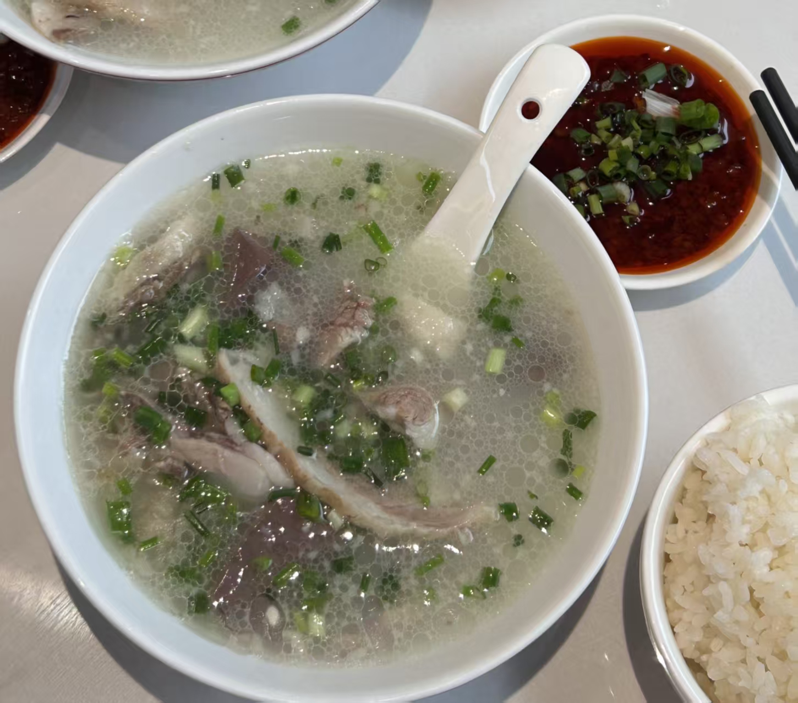
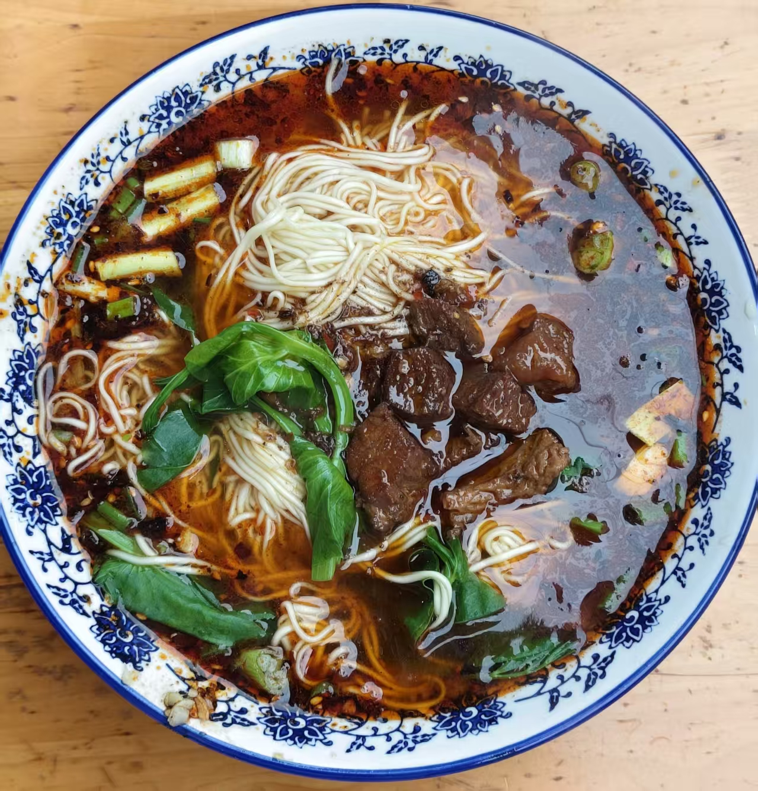
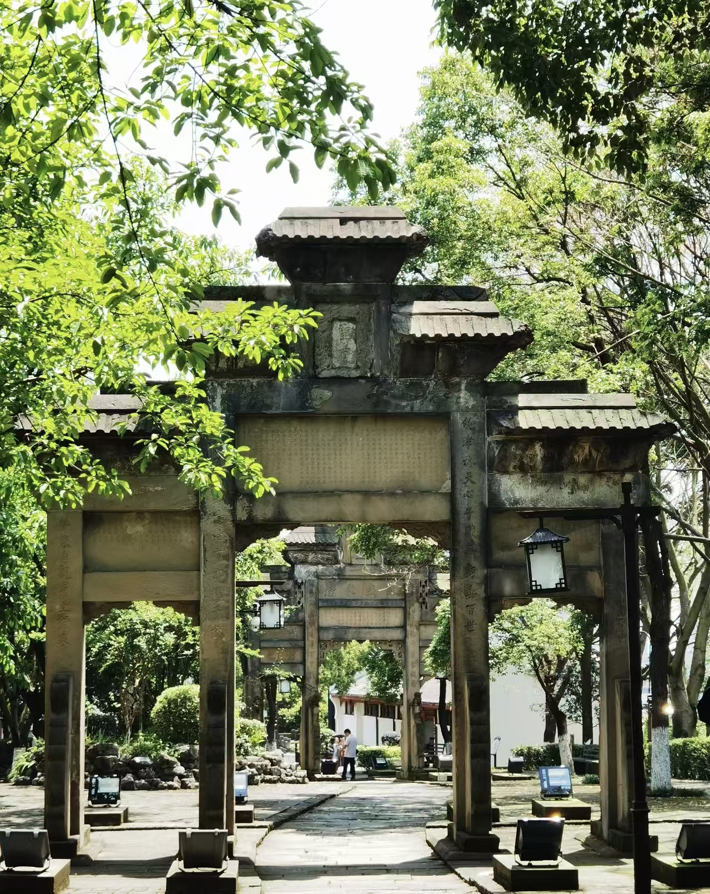
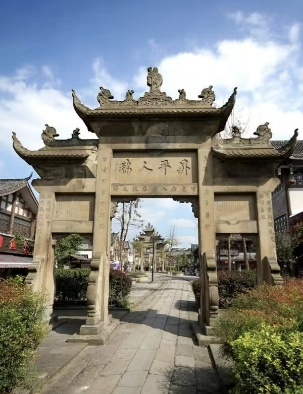

自驾前往
点击下方导航，直接驶向隆府·上座（西湖逸品店）。
人生从此将展开新的一页。
....但前途必定是光明的！
这份喜悦太大啦，就像一个需要用斧头才能劈开的巨大南瓜，迫不及待想和你分享！
2026年8月23日 12:00，我们在四川省隆昌市备下了丰盛的答谢小宴，真诚地邀请你来聚一聚、顺便闲话家常💐！
如果工作繁忙、路途不便，也完全不必为难！每一份随风寄来的心意与祝福，我们都铭记于心、好好珍藏。
若好有空，请提前和我们确定到场人数，方便我们为您安排座位🪑；
若有事不能到场，你的这份牵挂也同样珍贵。
愿我们各自的生活都顺风顺水，岁岁欢喜！
我们会为远道而来的亲朋好友们安排酒店住宿
请您提前告知我们到来的方式以及时间
以方便我们进行统计~
婚礼时间2026年8月23日 12:00 农历七月十一
婚礼地点四川省隆昌市 · 隆府.上座(西湖逸品店)
别忘了空着肚子来，我们为你准备了最地道的家乡美食！
把这一天，圈进我们的共同回忆。
Wedding Location

点击下方导航，直接驶向隆府·上座（西湖逸品店）。
请在 隆昌北站 下车，并提前告知行程；我们会安排专车接送。
Taste of Longchang
来隆昌赴宴，也别错过这一碗热腾腾的家乡味。

市级非遗 · 暖汤 · 隆昌味
隆昌市的传统特色名吃，也是市级非物质文化遗产。它选用本地放养的草饲黑山羊为原料，将羊肉、羊杂和羊骨放入大锅中，用清水文火熬煮6至8小时。
不加重色调料，汤汁乳白如脂，具有清而不浊、香而不膻、鲜美醇厚、肥而不腻的独特风味。

碱性湿面 · 红烧牛肉 · 麻辣鲜香
以内江碱性湿面为主要原料，以大骨汤为汤底，以红烧牛肉为臊子，添加熟油海椒、韭黄等配料而制成。
面条口感细滑，汤头麻辣鲜香，是一碗很有川南烟火气的汤面。
Around Longchang
赴一场欢宴，也顺路看看隆昌的湖光与古韵。
湖光 · 骑行 · 候鸟
古宇湖是20世纪70年代修建的人工中型湖泊，湖面面积约5.4平方公里。它与隆昌石牌坊、云顶寨并称为隆昌“三古之旅”的核心景观。
这里有湖光山色与候鸟栖息地，也适合环湖骑行一圈，全程约32公里。

古建 · 石刻 · 漫步
沿着青石路慢慢走，细看雕刻与牌坊纹样，把这座川南古城的岁月留在旅途里。

老街 · 市井 · 旧时光
赴宴之后，不妨到南关古镇逛逛，在老街与石牌坊之间，感受川南的悠闲烟火。